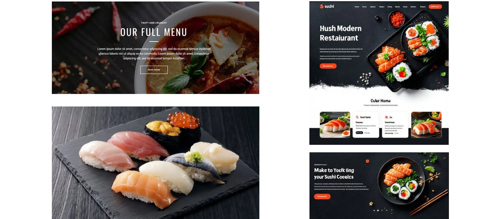
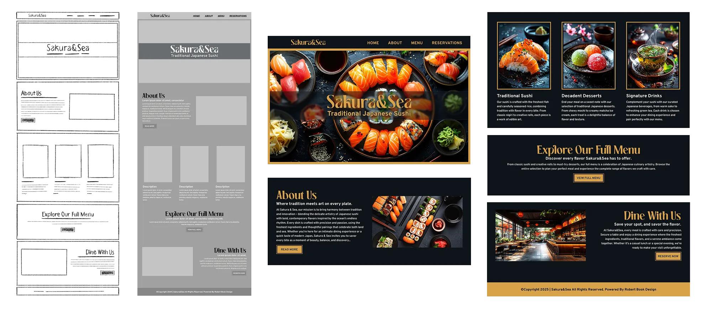
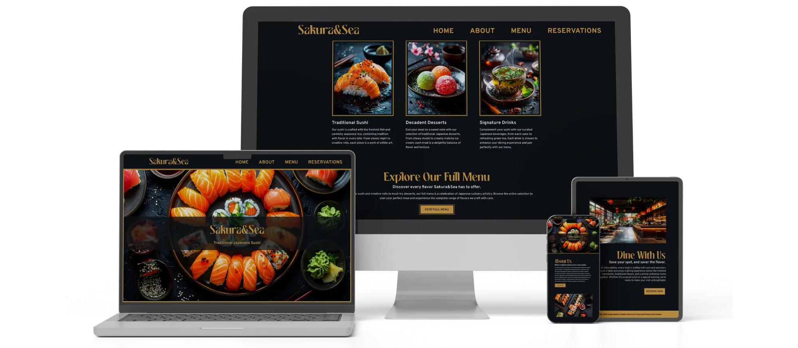

For this project, the challenge was to design a high-quality, visually appealing landing page for a sushi restaurant called Sakura&Sea. I took on the project after noticing that many local sushi restaurants had outdated or uninviting websites. My goal was to create a landing page that stood out and encouraged them to place an order.
I wanted to take inspiration not only from other restaurant websites, but from traditional Japanese cuisine itself, which emphasizes clean presentation and strong color contrast. To reflect that, I planned to use vibrant product photography against a dark background with a bright, saturated accent color.

I began by planning out the content sections. I knew a bright, inviting hero would be essential for setting the tone of the website and capturing a user's attention. The supporting sections included an about section, a featured dishes and menu section, and a reservation section.
After sketching out the main content sections, I selected a stylized heading font that highlighted the Japanese aesthetic, paired with a sans-serif paragraph font to maintain readability. Finally, I added the product photography and implemented the color scheme to bring the overall design together.

I used layout design, color theory, and responsive UI/UX techniques to create a polished, engaging landing page. Clear hierarchy, thoughtful spacing, and strong contrast guided the user's attention, while the dark interface and clean structure kept the design visually sharp and easy to navigate on any device.
Compared to many local Japanese restaurant websites, my design is modern and minimal. Many sites are cluttered or outdated, but the restrained layout, bold contrast, and high-quality imagery create a sharper, contemporary presentation that still reflects traditional Japanese elegance.